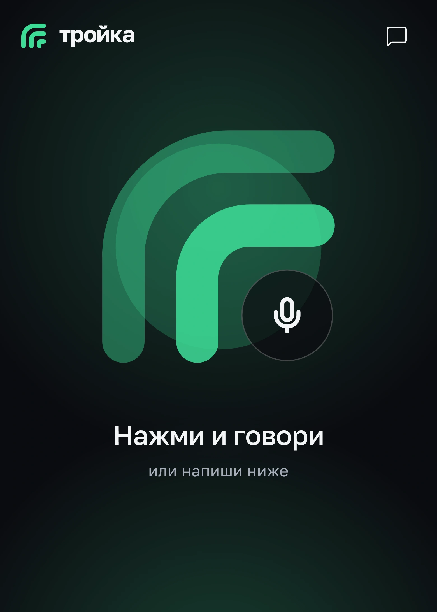

01 / 08
Смотри. Без рук.
Скажи «Тройка»
Тройка23:54
ГОЛОСОВОЙ РЕЖИМ
Слушаю…Фраза пробуждения«Тройка»
Фоновый режим Включён
Руки не нужны

Файлы ›
Управление разрешено
«Тройка, открой файлы»
Живой разговор
Тройка
Голосовой режим
Когда репетиция?
ТРОЙКАСегодня в семь.
Без интернета
План репетиции.docxСохранён на устройстве
✓
Сколько трафика?
ПОВТОРНОЕ ОТКРЫТИЕ ФАЙЛА
0байт
Передано0 Б
Получено0 Б
Собираю по частям
Модули Тройки
01Голос✓
02Команды✓
03Файлы✓
Подпишись
Telegram-канал Тройки
Ссылка в шапке профиля ↗